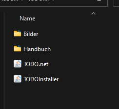
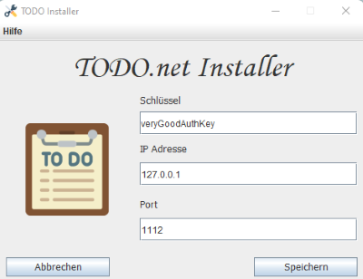
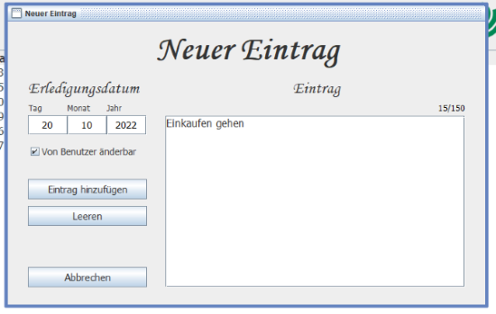
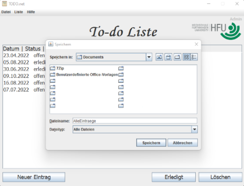
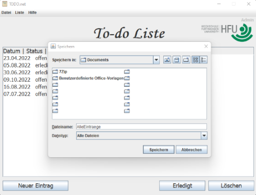
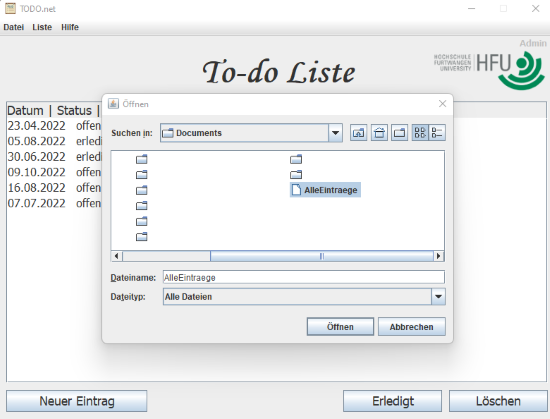
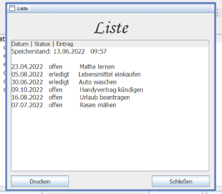
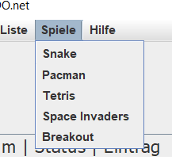

Benutzerhandbuch zur Verwendung der Anwendung.
Im folgenden Handbuch wird beschrieben, wie die TODO-Liste in Form einer Server-Client Anwendung zu verwenden ist.Server
Serverinstallation:Zip-Archiv entpacken und Dateien müssen in selbe Datei wie der ServerPort Einstellen:Ganzzahl in der einzeiligen Datei "Port.txt"
Authentifikationsschlüssel:"veryGoodAuthKey" und für den Admin:"veryGoodAdminAuthKey"
Client
Clientinstallation:Folgende Datein müssen in einen Ordner gepackt werden: Bilder, Handbuch, TODO.net, TODOInstaller. Öffnen Sie nun den TODOInstaller und füllen Sie die Felder mit den unten stehenden Angaben aus.Schlüssel:"veryGoodAuthKey" und für den Admin:"veryGoodAdminAuthKey"
IP-Adresse:"127.0.0.1"
Port:"1112"
 
Anwendung
Einen neuen Eintrag erstellen:
- Klicken Sie auf den Button "Neuer Eintrag". Dabei öffnet sich das Fenster "Neuer Eintrag".
- Geben Sie nun in die Felder unter "Erledigungsdatum" den "Tag", den "Monat" und das "Jahr" in Zahlenform ein.
- Als Admin können Sie mit der Checkbox auswählen, ob ein Benutz in der Lage sein soll ein TODO zu ändern.
- Geben Sie nun den TODO in das Feld unter "Eintrag" ein.
- Sollten Sie den kompletten TODO während des Erstellens erneurn wollen, klicken Sie auf den Button "leeren".
- Sollten Sie doch keinen TODO erstellen wollen, klicken Sie auf den Button "Abbrechen".
- Um den TODO in der Liste zu speichern, klicken Sie auf den Button "Eintrag hinzufügen". 
Nun wird der TODO in der TODO-List angezeigt.
Einen Eintrag als "erledigt" einbuchen
- Wählen Sie zunächst ein gewünschtes TODO aus und klicken Sie dann auf den Button "erledigt".
- Sollte der Admin den TODO auf "nicht änderbar" gesetzt haben sind Sie als normaler Benutzer
- nicht in der Lage diesen zu bearbeiten.
Einen Eintrag löschen:
- Klicken Sie auf den Button "Löschen".
- Nun werden Sie nochmals gefragt "Soll der Eintrag wirklich gelöscht werden?"
- Klicken Sie auf "Ja" um den Eintrag entgültig zu löschen.
- Klicken Sie auf "Nein" um den Eintrag wieterhin in der TODO-List zu behalten.
- Sollte der Admin den TODO auf "nicht änderbar" gesetzt haben sind Sie als normaler Benutzer
- nicht in der Lage diesen zu löschen.

Einen Eintrag wiederherstellen:
- Klicken Sie auf den Button "Datei". Danach auf "Wiederherstellen", um ein vor kurzem gelöshtes
- TODO wiederherzustellen.
Einen Eintrag speichern:
- Klicken Sie auf den Button "Datei". Danach auf "Speichern".
- Nun können Sie auswählen ob Sie "Alle Einträge" oder nur "Offene Einträge" speichern wollen.
- Die Textdatei der TODO Liste kann danach in einem beliebigen Verzeichnis gespeichert werden.
 
Einen Eintrag öffnen:
- Klicken Sie auf den Button "Datei". Danach auf "Öffnen".
- Nun können Sie den Ordner auswählen, indem Sie die Textdatei der gespeicherten Liste öffnen wollen.
- Die Liste wird dann direkt in der Anwendung angezeigt. 
Einen Eintrag drucken:
- Klicken Sie auf den Button "Datei". Danach auf "Öffnen".
- Dann müssen Sie eine zuvor gespeicherte Liste auswählen, die Sie gerne drucken möchten.
- Klicken Sie anschließend auf den Button "Drucken", um einen Drucker auszuwählen und die Liste zu drucken. 
TODO-Liste aktualisieren:
- Klicken Sie auf den Button "Liste". Danach auf "Aktualisieren".
- Die Liste wird allerdings auch bei jeder Aktion oder jeweils nach 30 Sekunden automatisch Aktualisiert.

Hilfe:
- Sollten Sie Hilfe benötigen Klicken Sie auf "Hilfe".Dort können Sie unter "Handbuch" nach Ihrem Problem suchen.
Hilfe bei Langeweile:
- Bei akuter Langeweile während dem TODOs erstellen, empfiehlt sich eines unserer kleinen Spiele die sich"
- unter dem Menüpunkt "Spiele" befinden. 
TODO-List beenden:
Um die TODO-List zu beenden klicken Sie auf "Datei" und "Beenden".